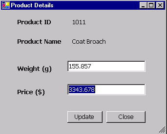

Safe Type Mapping in Oracle Data Provider for .NET
Table of Contents |
- Objective of the Sample Application
- Overview of the Sample Application
- User Notes with Screen Shots
- Required Software
- Extracting the Sample
- Database Setup
- Preparing and Running the Sample
- Description of Sample files
Objective of the Sample Application |
|
The purpose of this sample is to demonstrate Safe Type Mapping feature in Oracle Data Provider for .NET (ODP.NET) when it is required to store and retrieve the data without precision loss from the database.
Overview of the Sample Application |
|
|
ODP.NET offers faster and reliable access to Oracle Database by using Oracle Native APIs. ODP.NET provides features to access any .NET application. The data access through ODP.NET can be done using a collection of classes contained in Oracle.DataAccess assembly. Figure 1.1 describes how data is accessed using ODP.NET.
Figure 1.1 DataSet is an in-memory cache of the data retrieved from the database. OracleDataAdapter represents a set of data commands and a database connection that are used to fill the DataSet based on the query given. OracleCommand represents SQL statements to execute against datasource. OracleConnection is used to build the database connection. Safe Type Mapping is a feature that allows OracleDataAdapter to populate a DataSet with .NET type representations of Oracle data without any data or precision loss. ODP.NET defines corruptible types (DATE, TIMESTAMP, INTERVAL DAY TO SECOND and NUMBER types) which can potentially loose precision when converted to their corresponding .NET types during database operations. By using the Safe Type Mapping feature of ODP.NET these types can be safely retrieved as String or a byte array as against their default .NET types in the DataSet to avoid precision loss. When this C# application is run it shows a list of products from the database. Precious products like gold and diamond jewellery require weight to be stored with a high precision. The user can view the details of a product which shows weight and price of the product. The user also has the option to update these values. Safe Type mapping is used for weight and price data to avoid precision loss during data retrieval and updation. |
User Notes with Screen Shots |
|
The sample at the start up shows a list of products from
database as shown in Figure 1.2 . The user can choose to
use or not the Safe Type Mapping feature for retrieving and
updating product details.

Figure 1.2
The user can select a particular product to view and update its details as shown in Figure 1.3

Figure 1.3
For example, the user can choose to not to use Safe Type Mapping, click on Edit Product Details and enter a value like 22.67676889776666788998988686766 for Weight of product. The value will be rounded off and stored in the database. Now the user can close this screen and choose "With Safe Type Mapping" in previous screen. Edit details of a product and enter the above value for Weight of product. The precision of data value will be retained while updating and retrieving the column value.
If now you try to access the details of same product Without using Safe Type Mapping , it throws an Arithmetic operation resulted in an overflow exception due to pecision overflow of data value . Such an error is not encountered when using Safe Type Mapping.
Required Software |
|
-
Visual C# installed with MS Development Environment 7.0 version (MS Visual Studio .NET) including MS .NET Framework 1.0 version
-
Oracle8i Database or later running SQL*Net TCP/IP listener (can be downloaded here)
-
Oracle Data Provider for .NET (ODP.NET) (can be downloaded here)
Extracting the Sample |
|
Unzip SateTypeMapping.zip
using Winzip or command utility to your convenient directory. Extraction
of the zip file results
in the creation of SafeTypeMapping
directory.
Database Setup |
|
Connect to your database as any user and run the script SafeTypeMapping\Setup\DatabaseSetup.sql at the SQL prompt.
SQL>@<Extract_Dir>\SafeTypeMapping\Setup\DatabaseSetup.sql
where <Extract_Dir> is the directory where you have extracted the sample.
The script creates a user "OraNet" with password "OraNet". It also creates the PRODUCTS table as below and populates it with initial data.
| Column Name | Column Type |
| PRODUCT_ID | NUMBER(5) |
| PRODUCT_NAME | VARCHAR2(200) |
| PRODUCT_DESC | NVARCHAR2(1000) |
| CATEGORY | VARCHAR2(100) |
| PRICE | NUMBER(15,8) |
| PRODUCT_STATUS | VARCHAR2(30) |
| WEIGHT | NUMBER(37,32) |
| MODIFICATION_DATE | DATE |
Preparing and Running the Sample |
|
-
Ensure that the Database setup has been completed.
-
Open SafeTypeMapping.sln using Visual Studio .NET from <Extract_Dir>\SafeTypeMapping folder.
-
Edit ConnectionParams.cs file to change the database connection parameters i.e.TNSName for database you want to use . Save this file.
-
Ensure that the following .NET Component References have been added to SafeTypeMapping project:
- System
- System.Data
- System.Drawing
- System.Windows.Forms
- System.XML
- Oracle.DataAccess.
To add the above .NET Components- a)Go to Menu ->View-> Solution Explorer.
- b)Right click on SafeTypeMapping project, choose 'Add Reference'.
- c)Choose the above .NET Components from the list displayed.
- d)Click 'Select', then OK.
- e) The chosen .NET component gets added to the project.
- Build and run the sample.
Description of Sample Files |
|
| Directory | File Name | Description |
| SafeTypeMapping\doc | Readme.html | This file |
| blaf.css | This is a cascading stylesheet applied to Readme.html | |
| SafeTypeMapping\doc\images | This folder contains images used in the Readme.html file | |
| SafeTypeMapping\src\ | ConnectionParams.cs | This C# file contains parameters for database connection. |
| ConnectionManager.cs | This C# file manages the database connection used by sample. | |
| Products.cs | This C# file contains source code to display all the products from the database. | |
| ProductDetails.cs | This C# file contains source code to view and update product details to the database. | |
| SafeTypeMapping.csproj | C# project file | |
| SafeTypeMapping.csproj.user | Visual Studio Project User Options (this file gets automatically generated when a Visual Studio Project is created) | |
| Products.resx | .NET XML Resource Template (this file gets automatically generated when a Visual Studio Project is created) | |
| ProductDetails.resx | .NET XML Resource Template (this file gets automatically generated when a Visual Studio Project is created) | |
| SafeTypeMapping.sln | Visual Studio Solution | |
| SafetypeMapping\Setup | DatabaseSetup.sql | This is a SQL script file |
Please enter your comments on this sample in OTN Sample Code Discussion Forum.